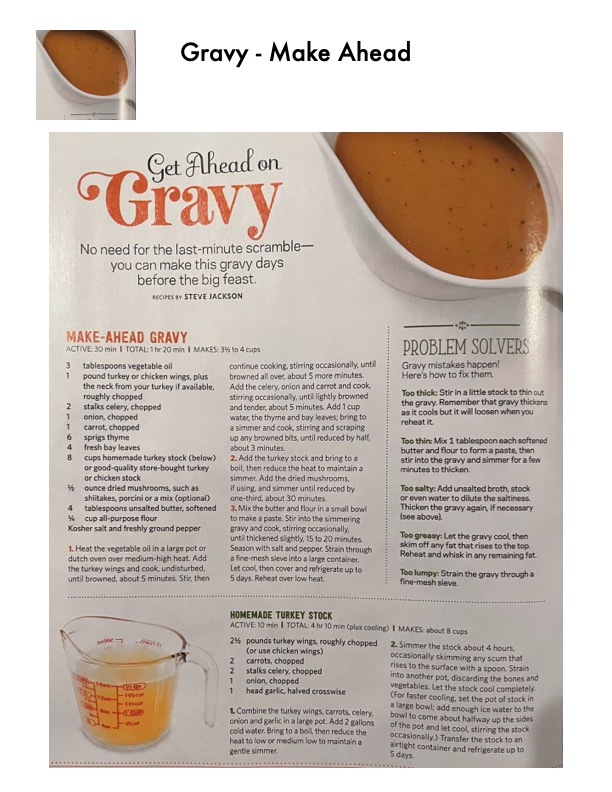

Make-Ahead Gravy & Homemade Turkey Stock

Original cookbook page 254
Complete make-ahead gravy recipe with troubleshooting tips plus homemade turkey stock recipe. Perfect for holiday meal preparation.
Prep: 40 minutes • Cook: 5 hours • Total: 5 hours 40 minutes
Ingredients
- FOR MAKE-AHEAD GRAVY:
- 3 tablespoons vegetable oil
- 1 pound turkey or chicken wings, plus the neck from your turkey if available, roughly chopped
- 2 stalks celery, chopped
- 1 onion, chopped
- 1 carrot, chopped
- 6 sprigs thyme
- 4 fresh bay leaves
- 8 cups homemade turkey stock or good-quality store-bought turkey or chicken stock
- ½ ounce dried mushrooms, such as shiitakes, porcini or a mix (optional)
- 4 tablespoons unsalted butter, softened
- ¼ cup all-purpose flour
- Kosher salt and freshly ground pepper
- FOR TURKEY STOCK:
- 2½ pounds turkey wings, roughly chopped (or use chicken wings)
- 2 carrots, chopped
- 2 stalks celery, chopped
- 1 onion, chopped
- 1 head garlic, halved crosswise
Instructions
- FOR GRAVY: Heat the vegetable oil in a large pot or dutch oven over medium-high heat. Add the turkey wings and cook, undisturbed, until browned, about 5 minutes. Stir, then continue cooking, stirring occasionally, until browned all over, about 5 more minutes. Add the celery, onion and carrot and cook, stirring occasionally, until lightly browned and tender, about 5 minutes. Add 1 cup water, the thyme and bay leaves; bring to a simmer and cook, stirring and scraping up any browned bits, until reduced by half, about 3 minutes.
- Add the turkey stock and bring to a boil, then reduce the heat to maintain a simmer. Add the dried mushrooms, if using, and simmer until reduced by one-third, about 30 minutes.
- Mix the butter and flour in a small bowl to make a paste. Stir into the simmering gravy and cook, stirring occasionally, until thickened slightly, 15 to 20 minutes. Season with salt and pepper. Strain through a fine-mesh sieve into a large container. Let cool, then cover and refrigerate up to 5 days. Reheat over low heat.
- FOR STOCK: Combine the turkey wings, carrots, celery, onion and garlic in a large pot. Add 2 gallons cold water. Bring to a boil, then reduce the heat to low or medium low to maintain a gentle simmer.
- Simmer the stock about 4 hours, occasionally skimming any scum that rises to the surface with a spoon. Strain into another pot, discarding the bones and vegetables. Let the stock cool completely. Transfer the stock to an airtight container and refrigerate up to 5 days.
Recipe #254 from collection